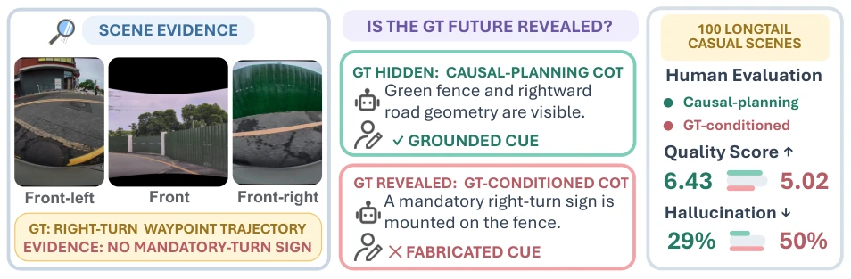
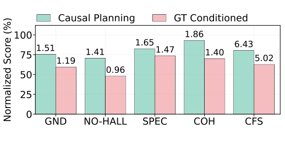
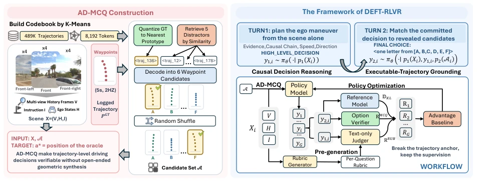
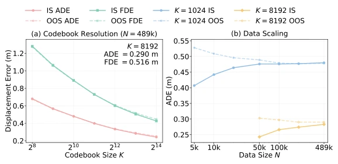
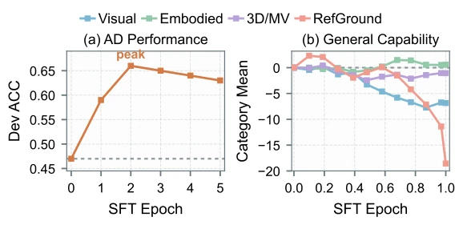
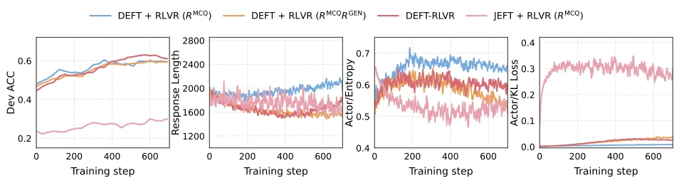
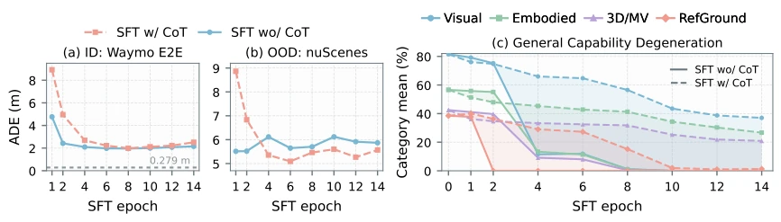
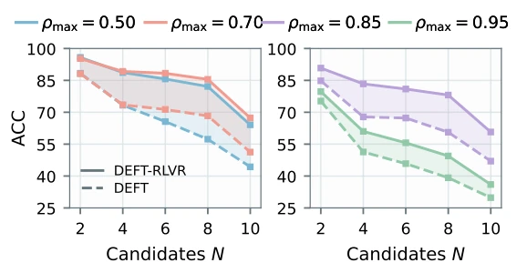
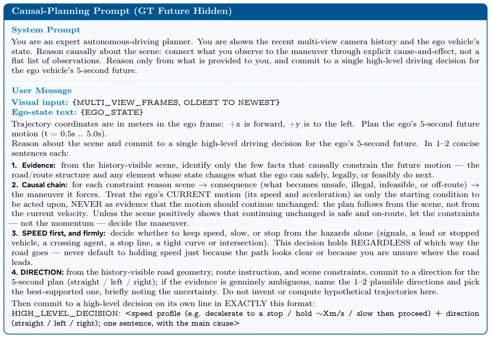
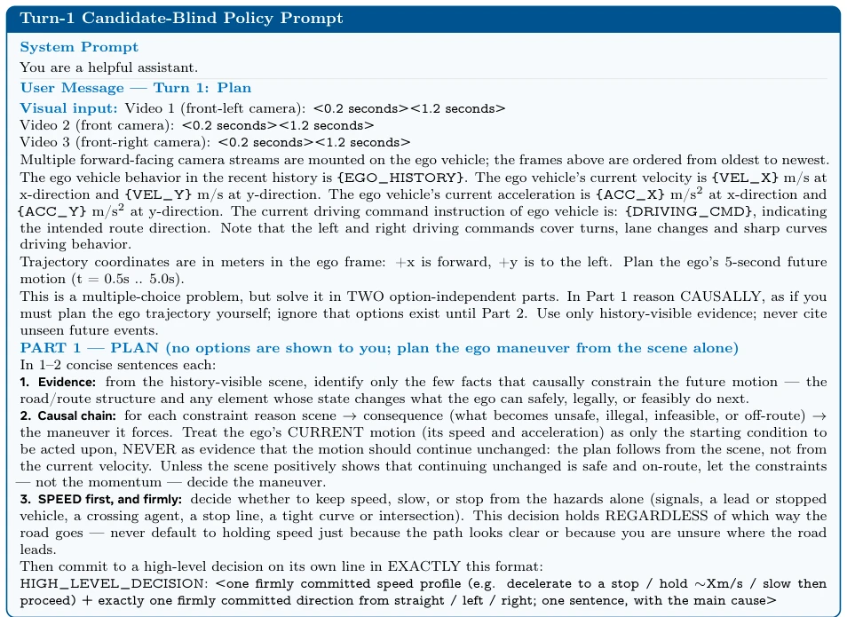

This paper delivers a strong remedy for the "open-book exam" flaw in autonomous driving VLMs. The authors found that previously, when teaching models to drive by directly providing answers (GT trajectories), the models learned "hindsight bias", fabricating reasons to cover up lies, leading to rampant hallucinations. They developed AD-MCQ, turning planning into multiple-choice questions, and used DEFT-RLVR to hide the answers, letting the model reason first and verify later. The results are indeed good; reasoning is more reliable, and general visual capabilities did not collapse. However, is using such complex two-stage RL and Rubric rewards a bit like using a sledgehammer to crack a nut? For industrial deployment, inference latency and computational costs need to be carefully calculated. But overall, this approach is much more reliable than directly generating trajectories; at least the model no longer "blatantly lies", especially for long-tail scenarios, where this improvement in causal fidelity is crucial, providing a new paradigm for verifiable reasoning.
The motivation is clear: existing autonomous driving VLA models often feed future ground truth (GT) trajectories directly to the teacher model when training CoT [12]. This is like leaking answers before an exam; the model learns not how to decide based on road conditions, but how to make excuses for predetermined results. The paper proves through experiments that this "trajectory anchoring bias" leads to poor performance in causal reasoning, with hallucination rates soaring, especially in complex scenarios. This violates the anchoring effect in cognitive psychology, preventing the model from truly understanding scene evidence. Worse still, if GT trajectories are removed and the model is asked to generate open-ended trajectories directly, it easily entangles high-level decisions with low-level dynamics, making verification difficult. Therefore, the core contradiction the authors want to solve is: how to avoid the model taking "shortcuts" to cater to known results while ensuring decision verifiability, restoring the "solve first, verify later" paradigm.

Figure 1 GT conditioning induces post-hoc rationalization. The illustrated CoT invents a mandatory-turn sign absent from the scene; aggregate results show lower causal faithfulness and preference, with more severe hallucinations.

Figure 2 Human-rated causal faithfulness comparison. GT-conditioned CoTs receive lower scores than causal-planning CoTs across grounding (GND), absence of hallucination (NO-HALL), specificity (SPEC), causal coherence (COH), and aggregate causal-faithfulness score (CFS).
The method proceeds in two steps. First, construct the AD-MCQ dataset, clustering continuous trajectories into a codebook via K-means, quantizing them into discrete prototypes, then generating one correct option and several hard negative samples for each scene to form multiple-choice questions. This turns planning into a precisely verifiable selection task, avoiding the difficulty of directly generating coordinates. Through the discrete codebook, the model only needs to choose from a limited vocabulary, significantly reducing generation difficulty. Second is the DEFT-RLVR training framework, core to which is "delayed exposure". In Turn 1, the model only sees the scene, outputs causal reasoning and high-level decisions, without seeing trajectory options at this time; In Turn 2, candidate trajectories are exposed, allowing the model to match previous decisions. The reward function combines MCQ accuracy reward and Rubric-based process reward; Rubric is generated offline, scoring is done via text online, with high efficiency. This design forces the model to think first then verify, rather than fabricating reasons while looking at answers, utilizing GRPO for joint optimization to ensure consistency between the reasoning process and final results.

Figure 3 The framework of AD-MCQ and DEFT-RLVR. AD-MCQ turns explicit trajectory selection into an exactly verifiable decision; DEFT-RLVR defers candidate exposure and combines outcome correctness with rubric supervision of candidate-blind reasoning.

Figure 4 Trajectory-codebook scaling. Reconstruction error versus (a) codebook size K and (b) clustering-corpus size N; solid/dashed curves indicate in-/out-of-sample trajectories.
Experiments used Waymo and internal data; the test set includes causal challenge scenarios, and cross-domain validation was performed on nuScenes [4]. Baselines include JEFT (simultaneous exposure) and distillation methods. Evaluation metrics included accuracy, plus CFS (Causal Fidelity) and HLD (High-level Decision Consistency), as well as 12 general vision benchmarks. Results show that DEFT-RLVR improved accuracy from 28.1% to 77.9% on Qwen3-VL-8B, and CFS also improved significantly. Most notably, compared to SFT distillation which sacrifices general capabilities, DEFT-RLVR actually improved general vision scores. Ablation studies prove that delayed exposure and Rubric supervision are both effective; directly generating trajectories leads to capability degradation, and cross-domain generalization is stronger. On nuScenes, DEFT-RLVR remains significantly better than baselines, proving its generalization capability.

Figure 5 Cold-start SFT trades general capability for AD specialization. (a) Hard-100 Dev accuracy. (b) First-epoch performance changes across four general-capability groups relative to the Base VLM.

Figure 6 Training dynamics of the Qwen3-VL-8B-Instruct RLVR variants. From left to right, the panels report development-set accuracy, response length, actor entropy, and actor KL loss. Candidate-visible JEFT exhibits by far the largest policy drift while remaining the least accurate. Deferred exposure substantially improves accuracy, and rubric-supervised DEFT-RLVR attains the strongest late-stage performance while keeping responses shorter and entropy lower than correctness-only DEFT, indicating more controlled and productive exploration.

Figure 7 Direct trajectory-token generation introduces coupled prediction and capability-retention bottlenecks. (a,b) Despite increasing fit under SFT, both in-distribution and out-of-distribution trajectory-prediction ADEs remain well above the codebook reconstruction floor of 0.279 m, indicating that most of the error arises from token inference rather than trajectory quantization. (c) Direct token supervision also substantially degrades general visual capability, and incorporating CoT does not prevent this degradation. Together, these results motivate externalizing planning as selection over explicit trajectory candidates rather than internalizing a large trajectory-token vocabulary.

Figure 8 Robustness to candidate-set construction. Holding scenes and oracle trajectories fixed, we resample distrac- tors across five candidate-set sizes and four hard-negative similarity bounds. DEFT-RLVR consistently outperforms training-free DEFT in all 20 configurations, indicating that its gains transfer across candidate constructions rather than depending on a fixed distractor geometry.
其他图片Other Figures

Figure 9: Complete causal-planning chat template. The teacher receives the scene history and ego state but no logged future. Per-scene inputs are shown as variables.

Figure 11: Turn-1 policy chat template. The policy observes the scene, ego state, and navigation command, but no candidate trajectory. The role-separated panel preserves the production message order, and variables in braces are instantiated per scene.